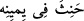

Hak Teâlâ’nın şu sözlerini tebliğ etti: “Bu kadın belâ günlerinde sana güzel hizmette
bulundu. Sen de eline yüz adedlik ot ve reyhan demeti al ya da başaklı buğday sapını
eline al (vur), böylece hem onun cezâsını hafiflet, hem de yeminini yerine getirmiş ol.
et-Tekmile’de der ki: Rivâyete göre, Eyyûb (a.s.) avucuna yüz tane başak almış ve
bunları karısına vurmuştur.
Fethu’r-Rahmân’da da şöyle der: Rivâyete göre Hz. Eyyûb’un karısı, hastalığı
boyunca yanına gidip gelirdi. Yine Eyyub’un yanına geldiği bir sırada şeytan gâh bir
doktor kılığında, gâh bir nasihatçı görünümünde karşısına çıkıp “Hastan, falanca puta
secde ettiği, falanca puta kurban kestiği takdirde iyileşecek” demeğe başlamış. Allah’ı
inkâr anlamına gelen bir sürü teklifler getiriyormuş. O da bunları kendisine (a.s.)
iletince Eyyûb (a.s.): “Senin karşına çıkıp duran o adam, Allah’ın düşmanı İblis’tir”,
demiş. Fakat karısı ısrar edip Eyyûb’u öfkelendirince o da: “Bir iyileşirsem, sana yüz
sopa vuracağım!” diye yemin etmiş.
Fakîr (Bursevî) der ki: Eyyûb’un yemin etmesini açıklama sadedinde yapılan bütün
bu açıklamalar başka tefsirlerde geçmekte ise de zayıf açıklamalardır. Zira Eyyûb’un
(a.s.) karısı, şayân-ı tercih olan görüşe göre dâimâ doğruyu söylemiş olan Yûsûf’un
(a.s.) torunudur. Böylesine dindar bir kadının hem kendi dininde hem de diğer dinlerde
Allah’ı inkâr etme anlamına gelen böyle bir şeye sürüklemesi düşünülemez. Kaldı ki
sırf İblis’in sözünü nakletti diye kocası Eyyûb’un bu kadar öfkelenmesini ve böyle bir
yemin yapmasını da gerektirmez. Bu bakımdan ilk görüş bu makama daha uygundur.
“Onunla” yâni o demetle karına “vur” da yeminini bozma, yemininde hânis olma,
çünkü “yeminini” ancak “böyle yerine getir”miş olabilirsin. Bunun üzerine Eyyûb bir
demet sap alıp bununla karısına bir kez vurmuş.
Bir kimse yeminini yerine getirmediği zaman, () yâni “yemininde hânis
oldu” denir. Bazı âlimlere göre ise () “günah” demek olup ‘yapmayacağım!’ diye
yemin ettiği bir şeyi yapmak; ‘yapacağım!’ diye yemin ettiği bir şeyi de yapmamak
durumunda kullanılır. Bu iki durumdan herbiri ()’e sebep olduğu için bu durumları
ifâde etmek üzere bu fiil kullanılmıştır.
Tâcü’l-mesâdir’de şöyle der: (): “Yeminin yalana çıkması” demektir. Kelime ()
harfiyle müteaddî olur ve “âsî, günahkâr olmak” anlamına gelir.
Şayet, niçin Cenab-ı Hak Peygamber Efendimiz’e “Allah (gerektiğinde)
yeminlerinizi bozmayı (ve kefaret ödemeyi) size meşru kılmıştır” (et-Tahrîm 66/2)
buyururken Eyyûb’a (a.s.) ‘şöyle yap da yeminini bozmuş olma” buyuruyor? diye
sorulacak olursa şöyle cevap veririz: Çünkü bizden önceki hiçbir dinde yemin keffâreti
diye bir şey yoktu. Bu, “size” (et-Tahrîm 66/2) ifâdesinden de anlaşıldığı üzere,
Allah’ın biz ümmet-i Muhammed’e ikrâm etmiş olduğu sadece bize özgü bir durumdur.
Es’iletü’l-Hikem’de de böyle kaydedilmiştir.
Birtakım müfessirler bu hükmü biraz yumuşatarak şöyle derler: Yeminler için keffâret
ödemek herhalde onların şerîatinde câiz değildi ya da yeminini yerine getirmek daha
faziletliydi.